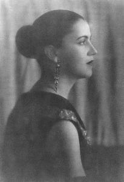
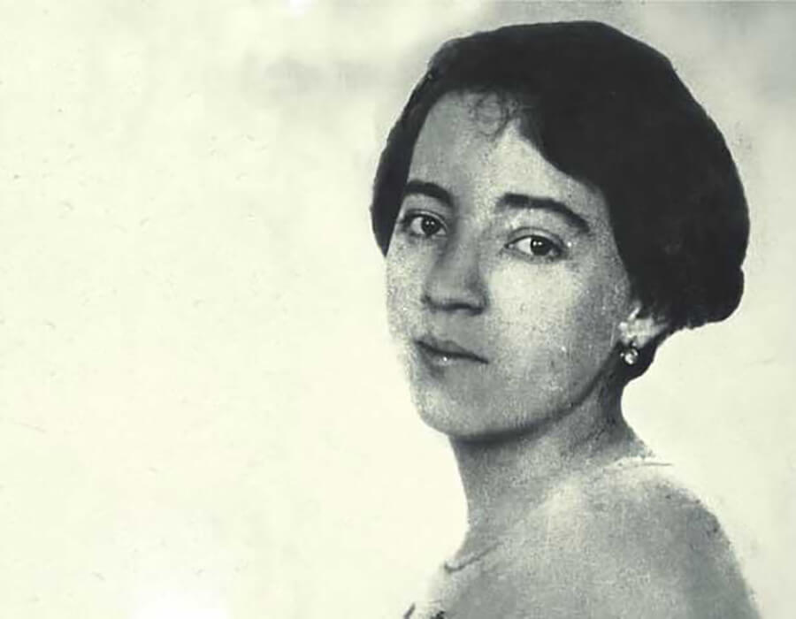

Artistas Brasileiros
Conheça os nomes que ajudaram a construir a identidade visual da arte nacional.

Tarsila do Amaral
Referência do modernismo brasileiro, criadora do Abaporu e da antropofagia cultural.
Cândido Portinari
Retratou o Brasil profundo, o povo e suas lutas, com realismo social e força simbólica.

Anita Malfatti
Pioneira do modernismo, rompeu padrões acadêmicos e introduziu influências europeias.
Di Cavalcanti
Retratou o cotidiano urbano com cores vibrantes e figuras populares.